Art & Culture
44 no-prep Art & Culture resources with answer keys: reading comprehension, reading trails, and more – filter by grade.
44 resources
Grade
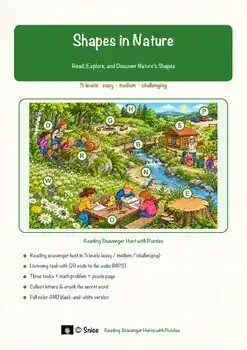
Shapes in Nature Reading Comprehension Passages | Art Scavenger Hunt 1-2

Warm and Cool Colors Reading Comprehension Passages | Art Scavenger Hunt 3-4

Land Art Reading Comprehension Passages | Visual Arts Scavenger Hunt 3-4
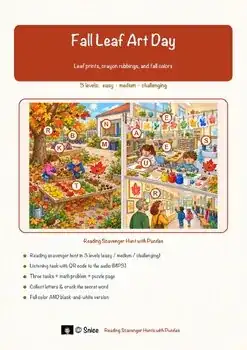
Fall Reading Comprehension Passages | Leaf Art Scavenger Hunt 1st 2nd Grade
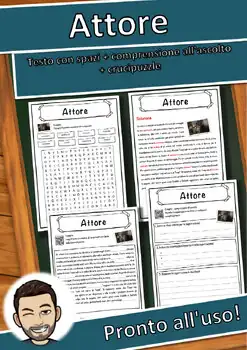
Attore – Italian Reading: Cloze Text, Listening Task & Word Search (Scheda)
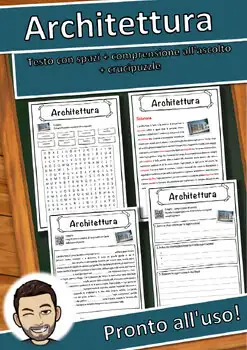
Architettura – Italian Reading: Cloze, Listening & Word Search
Erich Kästner – Italian Reading: Cloze, Listening & Word Search
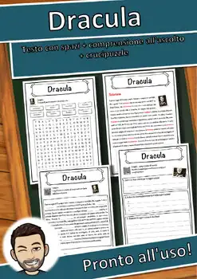
Dracula – Italian Reading: Cloze Text, Listening Task & Word Search (Scheda)
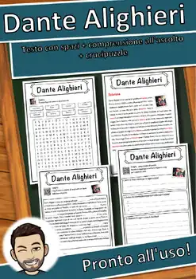
Dante Alighieri – Italian Reading: Cloze, Listening & Word Search
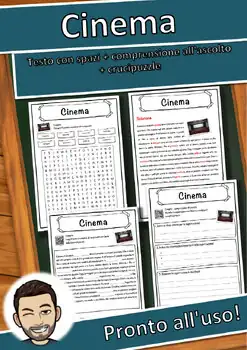
Cinema – Italian Reading: Cloze Text, Listening Task & Word Search (Scheda)
Capitano Orso Blu – Italian Reading: Cloze, Listening & Word Search
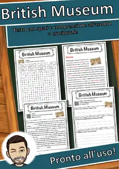
British Museum – Italian Reading: Cloze, Listening & Word Search
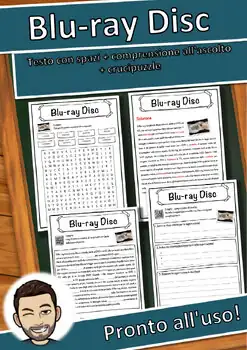
Blu-ray Disc – Italian Reading: Cloze, Listening & Word Search
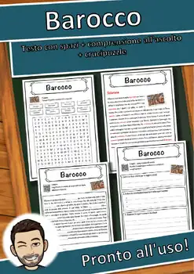
Barocco – Italian Reading: Cloze Text, Listening Task & Word Search (Scheda)
Arthur Conan Doyle – Italian Reading: Cloze, Listening & Word Search
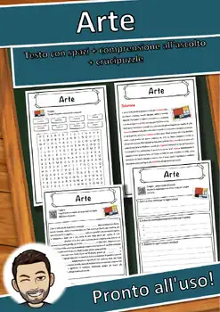
Arte – Italian Reading: Cloze Text, Listening Task & Word Search (Scheda)
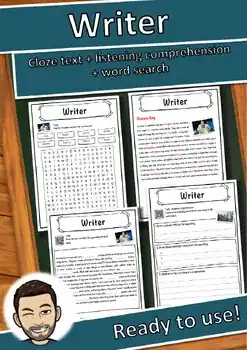
Writer – Reading Comprehension: Cloze Text, Listening Task & Word Search
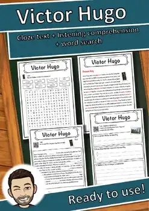
Victor Hugo – Reading Comprehension: Cloze Text, Listening Task & Word Search
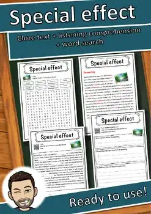
Special effect – Reading Comprehension: Cloze Text, Listening Task & Word Search
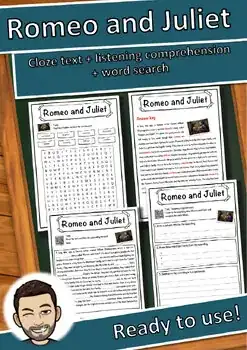
Romeo and Juliet – Reading Comprehension: Cloze, Listening & Word Search
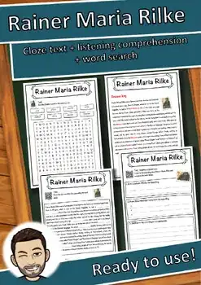
Rainer Maria Rilke – Reading Comprehension: Cloze, Listening & Word Search
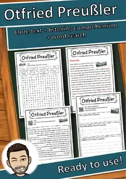
Otfried Preußler – Reading Comprehension: Cloze, Listening & Word Search
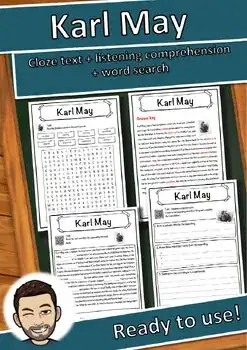
Karl May – Reading Comprehension: Cloze Text, Listening Task & Word Search
Literature – Reading Comprehension: Cloze Text, Listening Task & Word Search
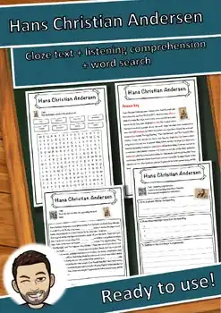
Hans Christian Andersen – Reading Comprehension: Cloze, Listening & Word Search
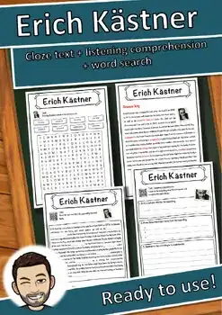
Erich Kästner – Reading Comprehension: Cloze Text, Listening Task & Word Search
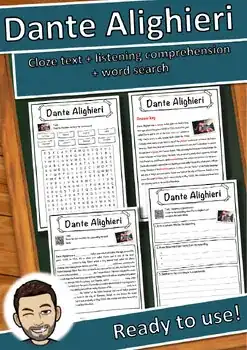
Dante Alighieri – Reading Comprehension: Cloze, Listening & Word Search
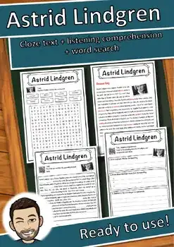
Astrid Lindgren – Reading Comprehension: Cloze, Listening & Word Search
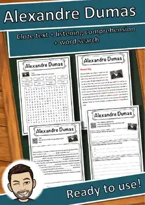
Alexandre Dumas – Reading Comprehension: Cloze, Listening & Word Search
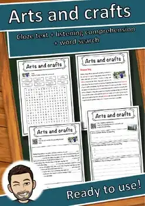
Arts and crafts – Reading Comprehension: Cloze, Listening & Word Search
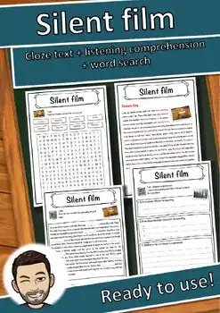
Silent Film Reading Comprehension Passage & Questions | Cloze + Word Search
Movie theater – Reading Comprehension: Cloze Text, Listening Task & Word Search
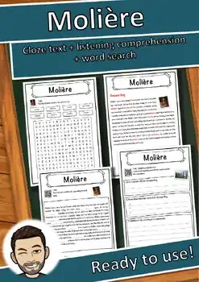
Molière – Reading Comprehension: Cloze Text, Listening Task & Word Search
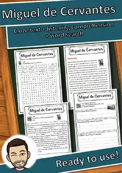
Miguel de Cervantes – Reading Comprehension: Cloze, Listening & Word Search
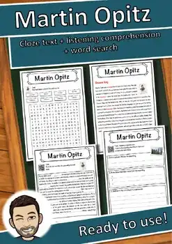
Martin Opitz – Reading Comprehension: Cloze Text, Listening Task & Word Search
Mark Twain – Reading Comprehension: Cloze Text, Listening Task & Word Search
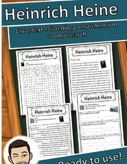
Heinrich Heine – Reading Comprehension: Cloze Text, Listening Task & Word Search
Johanna Spyri – Reading Comprehension: Cloze Text, Listening Task & Word Search
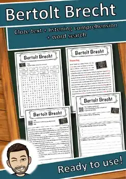
Bertolt Brecht – Reading Comprehension: Cloze Text, Listening Task & Word Search
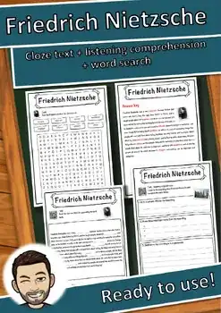
Friedrich Nietzsche – Reading Comprehension: Cloze, Listening & Word Search
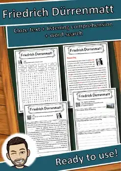
Friedrich Dürrenmatt – Reading Comprehension: Cloze, Listening & Word Search
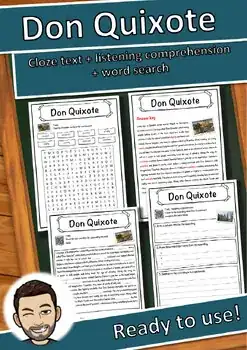
Don Quixote Reading Comprehension Passage & Questions | Cloze + Word Search
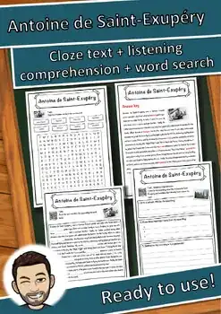
Antoine de Saint-Exupéry – Reading Comprehension: Cloze, Listening & Word Search
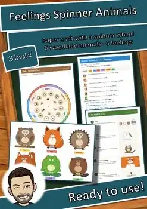
Feelings Spinner Animals Craft | SEL Emotions Activity & Worksheets K-3 ESL
No resources found – try a different search term or filter.